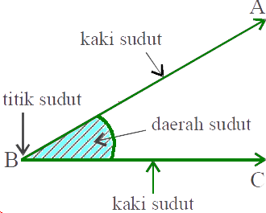

Di sekeliling kita banyak terdapat benda-benda yang mempunyai sudut, misalnya meja di ruang kelas. Meja itu setiap pojoknya mempunyai sudut. Besarnya sudut dapat diukur dengan menggunakan busur derajat atau alat ukur yang lain, baik yang baku maupun tak baku. Oleh karena itu, mari kita pelajari bersama-sama pengukuran sudut.
Sudut terbentuk oleh dua ruas garis yang berpotongan pada titik pangkal. Perhatikan gambar sudut berikut!
